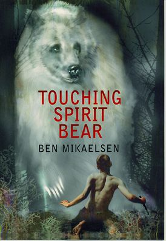

Touching Spirit Bear is a coming-of-age novel by Ben Mikaelsen that tells the story of Cole Matthews,
a fifteen-year-old juvenile delinquent who is sent to a remote Alaskan island as punishment for assaulting
a boy named Peter Driscal. The island is inhabited by a rare white bear called the Spirit Bear,
which Cole initially tries to kill. However, after being mauled by the bear, Cole begins to see the world
in a different light and learns to respect nature and his own life. The novel explores themes of anger management,
restorative justice, and the power of nature to heal
